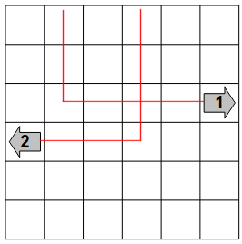
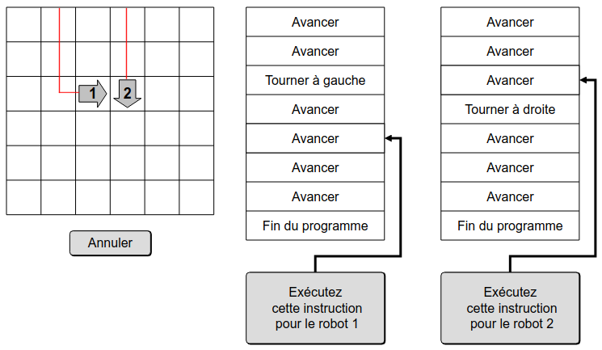
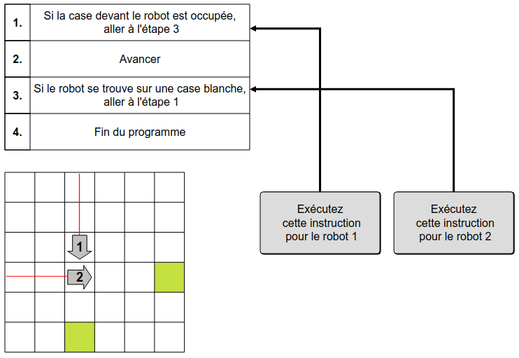
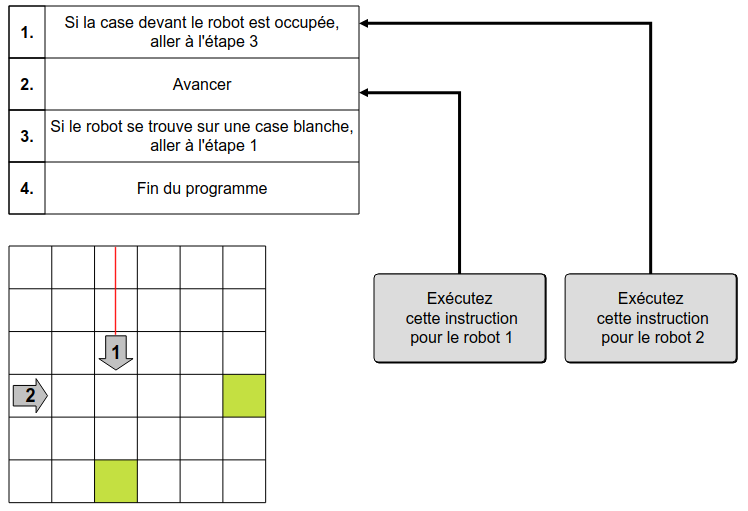
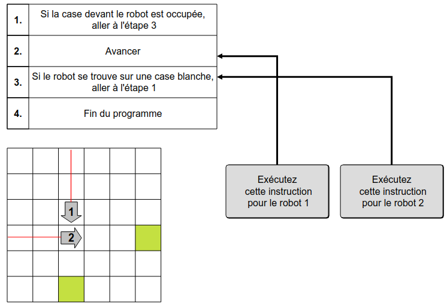
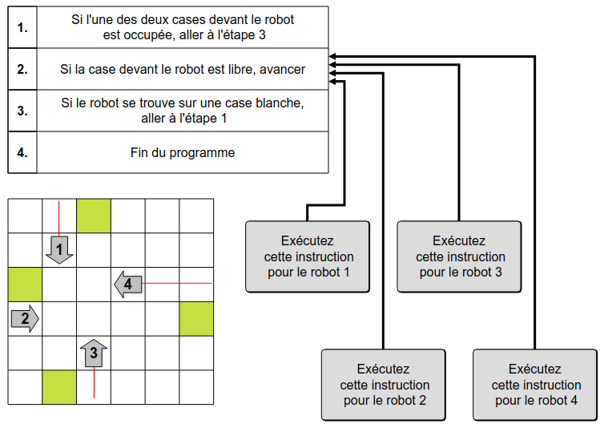
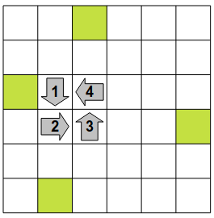

این جدول ۲۴ ربات با بردار مشخص شده اند.
هر ربات با یک برنامه کنترل می شود همه ی ربات ها با یک برنامه ی یکسان کنترل می شوند
به یک صورتی دستورعمل هارو اجرا کن که ربات ۱ با ربات ۲ تصادف کند
دستورات را جوری اجرا کن که تمامی ربات ها قبل از اینکه به خانه های سبز برسند گیر بی افتند.
برای اینکار، به ترتیبی که مد نظرت هست روی دکمه های خاکستری کلیک کن
تنها در صورتی ربات ۱ و ربات ۲ با هم برخورد میکنند که مسیر های آنها با هم تلاقی داشته باشتند
بنابراین، ابتدا ربات ۲ و را به سمت نقطه برخورد حرکت میدهیم . بعد ربات ۱ را به سوی همان نقطه حرکت میدهیم تا با ربات ۲ برخورد کند.
بنابراین، برای حل مسئله باید به ترتیب بر روی دکمههای زیر کلیک کنی: ۲, ۲, ۱, ۱, ۱, ۱, ۱.
اگر اول ربات۲ را به نقطه ای ببریم که با ربات ۱برخورد کند،دیگر نمیتوانیم ربات ۱ را حرکت بدهیم چون با توجه به دستور مرجله ۱ اگر خانه ی بعد رباتمان خالی نباشد باید به مرحله ۳ مراجعه کنیم و بعد از آن باز هم به مرحله ۱ برمیگردیم. برای همین ربات ۱ را دیگر نمیتوانیم تکان دهیم
بنابراین باید رویکرد رو تغییر بدیم. ابتدا ربات ۱ را به نقظه تلاقی می بریم و دستور مرحله ۱ را اجرا میکنیم. ربات ۱ جلویش خالی است و میتواند بدون هیچ مشکلی دستور مرجله ۲ را اجرا کند و به جلو حرکت
پس ربات ۲ را به نقطه تلاقی میبریم تا با ربات ۱ برخورد کند.
بنابراین، برای حل مسئله باید به ترتیب بر روی این دکمهها کلیک کنید۱, ۱, ۱, ۱, ۱, ۱, ۱, ۲, ۲, ۲, ۲, ۲, ۱.
برای گیر اناختن تمام ربات ها، باید همه آنها را در جایی قرار دهیم که تنها یک خانه با نقظه ی برخورد فاصله داشته باشند. برای همین برای همه ی ربات ها دستور مرحله ۲ را اجرا میکنیم
اگر به تعداد درست مرحله های مورد نظر را اجرا کنیم، به این نتیجه میرسیم:
بعد از این، فقط با اجرای یک دستور ، تمام ربات ها گیر میافتند.
بنابراین، برای حل مسئله باید به ترتیب بر روی این دکمهها کلیک کنی: ۱, ۱, ۱, ۱, ۲, ۳, ۳, ۳, ۳, ۴, ۴, ۴, ۴, ۴, ۴, ۴, ۱, ۲, ۳, ۴.